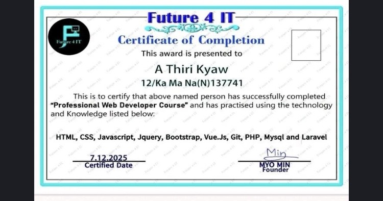

Computer Science scholar
Building a foundation in programming, data structures, algorithms, software engineering, and academic communication.
Computer Science Scholar, Founder, and Educator building practical web systems and clearer pathways into technical learning for Myanmar youth.
A concise view of the person, the work, and the reason behind the work.
I am a multidisciplinary Computer Science student at University of the People and a certified Full-Stack Web Developer. My focus is the space where practical software, data-aware systems, and technical literacy meet.
Through Technology & Knowledge Hub, I design educational resources for Myanmar youth and connect core Computer Science concepts with English for technology, open-source contribution, and real project practice.
Replace a long biography with a sequence of roles, practices, and visible outcomes.
Building a foundation in programming, data structures, algorithms, software engineering, and academic communication.
Applying HTML, CSS, JavaScript, PHP/Laravel, Vue.js, MySQL, and Git/GitHub workflows to responsive web systems.
Operating Technology & Knowledge Hub as a digital learning platform for technical literacy, Computer Science, and English for Tech.
Each project card points to a live destination or a practical artifact so visitors can inspect the work directly.
A learning platform combining Computer Science, IT, and Technical English for Myanmar learners, with an open educational direction.
Curriculum and resource architecture connecting academic standards, technical practice, and an accessible learning path.
Educational outreach media designed to make online learning ecosystems and technical concepts easier to navigate.
Core technologies and foundations used across learning, projects, and deployment.
My technical practice moves from semantic front-end structures to backend logic, relational data, and collaborative delivery. The goal is not to collect tools; it is to use the right level of technology to make a useful thing understandable and maintainable.
Credentials become stronger when the issuer, date, and applied practice are visible together.
End-to-end web deployment practice across Laravel, MySQL, responsive front-end architecture, HTML, CSS, JavaScript, jQuery, Bootstrap, and Vue.js.

For academic collaboration, education initiatives, web projects, or a conversation about accessible technical learning.